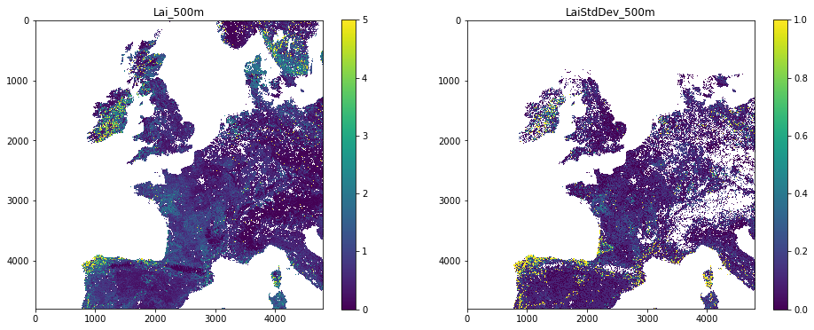

030 NASA MODIS Earthdata : Answers to exercises
Exercise 1
The pattern on the tile names is hXXvYY where XX is the horizontal coordinate and YY the vertical.
- use the map above to work out the names of the two tiles that we will need to access data over the UK
- set the variable
tilesto contain these two names in a list
For example, for the two tiles covering Madagascar, we would set:
tiles = ['h22v10','h22v11']
# tiles for the UK
tiles = ['h17v03', 'h17v04', 'h18v03', 'h18v04']
Exercise 2: mask invalid data
-
write a function called
data_maskthat is given:- a data dictionary
- a list of sds strings
- a list of scale factors
- a list of upper threshold values
- a list of lower threshold values and returns the dictionary with the scaled and masked datasets
-
plot both
Lai_500mandLaiStdDev_500mside-by-side. You should apply appropriate scaling factors and masking as above.
# ANSWER
from geog0111.modis import Modis
from geog0111.im_display import im_display
import numpy as np
def data_mask(data,sds,scales,uthresh,lthresh):
'''
given:
data : data dictionary
sds : list of sds strings
scales : list of scale factors
uthresh : list of upper threshold values
lthresh : list of upper threshold values
return the dictionary with the scaled
and masked datasets
'''
for i,s in enumerate(sds):
scale = scales[i]
ds = data[s] * scale
# mask invalid by setting to
if uthresh[i] != None:
ds[ds>=uthresh[i] * scale] = np.nan
if lthresh[i] != None:
import pdb;pdb.set_trace()
ds[ds<=lthresh[i] * scale] = np.nan
# load back into data_MCD15A3H
data[s] = ds
return data
# ANSWER
# put the required SDS in the sds field of kwargs
kwargs = {
'tile' : ['h17v03', 'h17v04', 'h18v03', 'h18v04'],
'product' : 'MCD15A3H',
'sds' : ['Lai_500m','LaiStdDev_500m']
}
# get the data
modis = Modis(**kwargs)
# specify day of year (DOY) and year
data_MCD15A3H = modis.get_data(2019,doy=1+4*10)
sds = kwargs['sds']
scale = [0.1, 0.1]
uthresh = [100,100]
lthresh = [None,None]
data_MCD15A3H = data_mask(data_MCD15A3H,sds,scale,uthresh,lthresh)
# plot with different vmax for the plots!
im_display(data_MCD15A3H,kwargs['sds'],shape=(1,2),x_size=16,y_size=3,vmax=[5,5])

Exercise 3
- write a function called
get_doythat is given the year, month and day integer and returns the day of year - test it
# ANSWER
from datetime import datetime
def get_doy(year,month,day):
'''
function that is given
the year
and month integer
and returns the day of year
'''
doy = (datetime(year,month,day) - datetime(year-1,12,31)).days
return doy
# TEST
assert get_doy(2019,1,1) == 1
assert get_doy(2019,2,1) == 32
Exercise 5
- Explore the MODIS datasets in your own time, and get to know the datasets they contain, along with the scaling factors and other interpretation information. Note that if we have not already downloaded particular datasets into the cache, it may take a short time for them to download and load.
# ANSWER
# Explore!
Last update: October 2, 2020